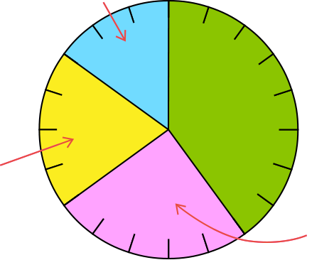

- 문제 1
- 문제 2
- 문제 3
- 문제 4
- 문제 5
-
지윤이네 반 학생들이 주말에 놀러 가고 싶은 장소를 조사하여 나타낸 원그래프입니다. 가장 많은 학생들이 주말에 놀러 가고 싶은 장소를 찾아보시오.
주말에 놀러 가고 싶은 장소별 학생 수0255075극장
(40 %)놀이공원
(25 %)수영장
(20 %)기타(15 %)극장 -
민영이네 반 학생들이 좋아하는 꽃을 조사하여 나타낸 띠그래프입니다. 띠그래프를 보고 더 알 수 있는 내용을 말해 보시오.
좋아하는 꽃별 학생 수예민영이네 반 학생들이 가장 많이 좋아하는 꽃은 장미입니다.
-
은희네 반 학생들이 태어난 계절별 학생 수를 조사하여 나타낸 원그래프입니다. 은희네 반 학생들은 어느 계절에 가장 적게 태어났습니까?
태어난 계절별 학생 수0255075봄
(30 %)여름
(40 %)가을
(10 %)겨울(20 %)가을 -
은희네 반 학생들이 태어난 계절별 학생 수를 조사하여 나타낸 원그래프입니다. 봄에 태어난 학생이 6명이라면 가을에 태어난 학생은 몇 명입니까?
태어난 계절별 학생 수0255075봄
(30 %)여름
(40 %)가을
(10 %)겨울(20 %)명2 -
은희네 반 학생들이 태어난 계절별 학생 수를 조사하여 나타낸 원그래프입니다. 원그래프를 보고 알 수 있는 사실을 두 가지 적어 보시오.
태어난 계절별 학생 수0255075봄
(30 %)여름
(40 %)가을
(10 %)겨울(20 %)예여름에 태어난 학생 수는 겨울에 태어난 학생 수의 2배입니다.
예여름에 태어난 학생이 가장 많습니다.